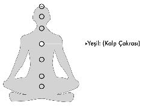
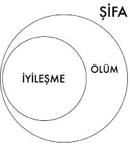
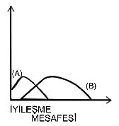
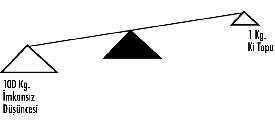

4- YEŞİL – KALP ÇAKRASI
(ŞİFA + BLOKAJ ÇÖZMEK):
Kalp çakrası, düşünüldüğü gibi kalbin üzerinde değil, göğüskafesinin tam ortasında yer alan bir enerji merkezidir. Halk arasında iman tahtası olarak bilinen, tıptaki adı da sternum olan bölgedir.
Kalp çakrası yeşil “Ki” toplarıyla tetiklenir ve iki temel amaç üzere kullanılır:
a) Şifa
b) Blokaj çözmek
a) Şifa Nedir? Günümüzde insanlar “şifa” kelimesini aslında taşıdığı anlamın çok dışında, bambaşka bir durumu ifade etmek üzere kullanıyorlar. “Şifa” her ne kadar dil kurumları sözlüklerinde iyileşmek anlamında kullanılsa da aslında tam karşılığı bu değildir.
“Şifa”dan anladığın şey; yaşadığın hastalıkların semptomlarını derhal ortadan kaldırmak ve midende koca bir tümör olduğu halde hiç ameliyata bile gerek kalmadan bu tümörden ve sonuçlarından muaf kalmaksa elbette yanılıyorsun.
ŞİFA; bedendeki ağrıları baskılayıp dindirmek ve hastalık semptomlarını ortadan kaldırmak değil, bedenin bütün iyileştirici sistemlerini harekete geçirmesi işlemidir!
Başı ağrıyan insana onun ağrılarını gidermek üzere verdiğin şifanın iyileşme sayılması mümkün değildir. Ağrıları baskılamak, o kişiye verebileceğin en büyük zarardır çünkü görünürdeki sıkıntısı geçmiş olduğundan, içerideki ağrıyı yaratan asıl problemi görmesi ve onu iyileştirmesi gecikmektedir.
Yapılan her geç teşhisin temelinde,
ağrıların dindirilip kısa süreli rahatlama refleksi yatar.
Şifa, ağrıların azalması, çoğalması ya da dindirilmesiyle ölçülmez. Bu yüzden de iyileşmek ağrı duymamak anlamına gelmez.
Şifa çalışması yaptığım hastalarıma hiçbir zaman ağrılarının ne durumda olduğunu sormamışımdır. Şifayı uyguladıktan sonra masamın başına geçerim ve hastamın üzerine düşen ödevlerini yazarım. Bu noktada ağrılarıyla ilgilenmiyor oluşuma alınganlık gösterenler de olur. “Ağrımın geçip geçmediğini sormayacak mısınız?” diyenlere hemen caddenin karşısındaki eczaneyi gösteririm ve “Ağrı bizim işimiz değil. Amacınız iyileşmek yerine sadece ağrılarınızı dindirmekse lütfen eczaneden bir ağrıkesici alın. Ne benim vaktimi harcayın ne de paranızı” derim...
İyileşmekteki amaç, sorunun kendisini tedavi etmek ve söz konusu ağrıların tekrarlanmasını önlemektir. İçerideki hastalık iyileşmediği sürece hastalar sürekli ağrı şikâyetleriyle gelip, sancıları geçtiğindeyse kısa süreli rahatlayıp evlerine dönmeye devam edeceklerdir ve eninde sonunda yüzleşmeyi erteledikleri hastalıklarıyla yazık ki geç yapılmış bir teşhisle tanışmak zorunda kalacaklardır.
Ağrı, bedende bir şeylerin problemli gittiğinin habercisidir ve bu yüzden de onu görmezden gelmek yerine ne söylemeye çalıştığıyla ilgilenmek gerekir.
Evinde bir yangın çıksaydı ve bunun üzerine de yangın dedektörü sayesinde alarm çalmaya başlamış olsaydı yapacağın ilk şey çalan alarmı kırmak mı olurdu yoksa yangını söndürüp alevlerden kurtulmak mı?
Çektiğin bel ağrılarını önemsemez ve ağrıkesici kullanarak sancılarını dindirmeye devam edersen, yemek masasını yerine çekmeye çalıştığın bir gün kendini felç edebilirsin.
Baş ağrılarını dinlemez ve onun sana, yaptığın işten hemen uzaklaşman gerektiğini, yatarak istirahat etmeni söylediğini duymazsan, işinin başında beyin kanaması geçirmen de çok mümkün.
Ağrıyan diz eklemlerin sana koşmaman gerektiğini anlatırken sen koşmakta inat edersen, menüsküs ameliyatı geçirmen şaşırtıcı bir son olmayacaktır.

Her iyileşme bir şifadır ancak her şifa bir iyileşme değildir. Dolayısıyla her ölüm de bir şifadır ancak her şifa ölüm değildir...
Günümüzün bazı tıp neferleri büyük kahramanlıklara soyunarak hastaları her ne pahasına olursa olsun, makinelere bağlı halde bile yaşamda tutuma çabası içindeler. Özellikle Batı tıbbı hastaların onurlarıyla ölmelerine izin vermez ve vücutları paramparça olup bilinçleri kapanmış, bitkisel hayata girmiş hastaların yaşamsal sistemlerini açık tutmak için çok uzun zamanlar harcarlar. Bazen şifa, gitmeye karar vermiş bir ruha beklediği bu yolculukta ona fırsat vermek ve bu çabasını kolaylaştırmaktır.
Şifa, bazen iyileşmeye bazen de ölüme giden yolculukta hastaya sunulan en doğru ve etkili yardımdır.
Yolculuğunu artık bitirmek isteyen bir ruhu, yorarak ya da hırpalayarak engellemeye çalışmak, kendini şifacı gören kişinin egosuna kalmamalıdır.
İnsanlara yardım ederken, “iyileşmek” ve “ölüm” olasılıklarının aynı anda var olduğunu ve bu ikisi arasındaki seçimi o ruhun bizzat kendisinin yapabileceğini unutmamak gerekir. İyileşmek istemeyen birini yolculuğundan vazgeçirmek başkasının elinde değildir.
Hayat, Hollywood filmlerindeki gibi son sahnede ölümden geri dönerek yeniden ayağa kalmak ve her şeye rağmen hayatta kalmayı başarmak değildir.
İnsanın mutlu sonu “yaşamak”, kötü sonuysa “ölmek” demek doğru bir yaklaşım sayılmaz. Tekâmül sonsuz bir yolken bu sınırsızlığın üzerinde bir son durak aramak ve bu durağın adına da “ölüm” demek hakikatten uzaktır. Ölüm sadece bir evredir. Doğum gibi, yaşamak gibi...
Doğmaktaki ya da yaşamaktaki hedef ölüme gidip noktayı koymak değil, bu evreyi de deneyimleyip yola devam etmektir...
“Ölüm” bildiğin formun sonu, olduğun formun dönüşümüdür!
– Metin ya ölürsen?
– Ruhparçam! Ya sen aslında ölüysen? Unutma; ölümden en fazla korkanlar, yaşamayı bilmeyen insanlardır.
Eskiden yoğun bakım hastalarının yanına girerken hasta yakınlarını uyarır ve şifanın ardından belki hastanın ölmeyi tercih edebileceğini söylerdim. Buna hazır olmadıkları sürece de içeri girmezdim.
Şifa, her zaman öngördüğün şekilde sonuç almak değildir. Konuyla ilgili arkadaşımın kardeşiyle yaşadığım bir şifa deneyimini anlatmam söylemeye çalıştığım şeyi açıklayacaktır. Adada bulunduğum sırada çocukluk arkadaşımın kardeşi futbol oynarken dizi, eklem yerinden ters büküldüğünden sakatlanmıştı. Arkadaşım katıldığım televizyon programlarını diline dolayıp benden hokus pokus yaparak hızlı bir tedavi uygulamamı beklediğini söyledi ve “O kadar programlara gidip konuşuyorsun. Kardeşimi kaldır ayağa bakalım” diyerek ahkâm kesmeye başladı.
Elimi sakatlanan çocuğun dizine koyup bir yandan “Ki” enerjisini bu hasarlı alana vererek iyileşmeyi başlatırken, diğer yandan da hastayla konuşarak acı veren ağrı alanlarını bulmaya ve kırık ya da çatlak olup olmadığını anlamaya çalışıyordum. Dizinde kırık yok gibi duruyordu fakat eklem ters büküldüğünden içeride aslında ciddi bir parçalanma söz konusuydu. Şifayı uyguladıktan sonra evine dönmesini, ayağının üzerine basmamasını ve yatarak dinlenmesini istedim. Aynı gece arkadaşımdan hiç beklemediğim bir telefon geldi ve kardeşinin bacağının iyileşmek yerine daha çok şiştiğini söyledi. Oysa kardeşi aynı gecenin sabahında yatağından çıktığında yüzde yetmiş iyileşmişti ve sahile yürüyerek gidebiliyordu.
Eklem yeri bu şekilde hasar alan bir kişinin 24 saat içinde ödeminin tavan yapıp bu hızda iyileşme göstermesi mümkün değildir. İyileşmesi uzun zaman alabilecek bu sakatlanmayı tek geceyle atlatabilmişti ancak benden beklediği şey, hiç acı çekmeden, hastalığını yaşamadan ve hiçbir semptom göstermeden birkaç dakika içinde yürüyüp koşabilmekti.

Şifada insanların umdukları ilk şey ağrılarının ve semptomlarının derhal geçmesidir. Genel olarak herkes, hastalıklarını hiç yaşamadan onlardan kurtulmayı ister.
Vücudu enfeksiyon içinde olan bir hastamın, gün içinde kendisine uyguladığım şifanın ardından gece ateşi yükselince annesi sitem ederek beni aramış, çocuğunun kötüleştiğinden yakınmıştı.
Kadının bilmediği şey, çocuğun kötüye değil iyiye doğru gittiğiydi. Bedeni nihayet mikroplarla savaşmaya başladığından, çocuk iyileşme gösteriyordu. Vücuttaki ateşin yükselmesi, bedenin içerideki mikroplara karşı savaş ilan etmesi ve mücadeleyi başlatmasıydı.
40 dereceye yükselen bir ateş, bedendeki protein yapısını bozduğu için bu noktada doktor müdahalesi gereklidir ancak kontrol edilebilen ateşleri hemen baskılayıp düşürmeye çalışmak, bedeni mücadelesinden alıkoymaktan başka işe yaramayacaktır.
Günümüzde artık eskiden olduğu gibi ateşi olan çocuklara, hemen bir ateş düşürücü şurup verilmiyor. Bademcikleri şişen çocukları ameliyata almak da konuyla ilgili uzaman doktorların aklına ilk gelen tedavi yöntemi değildir.
Tedavilerde birinci öncelik hastanın taşıdığı mikropla savaşmasına fırsat vermektir.
Her öksürükte, öksürüğü kesmek üzere bir ilaç, her ateşte bir ateş düşürücü şurup, her boğaz enfeksiyonunda bademcik ameliyatı düşünmek insan vücudunun iyileşme refleksine güvenmemek ve bağışıklığı çökermektir.
Alkolü fazla kaçırdığında kusma hissi yaşayan insanların ilk iş olarak istifra giderici önemler almaya çalışması da doğru değildir. Beden istifra etmek isterken buna engel olmak, kusma refleksinin verdiği mesajı duymazlıktan gelmektir. Mide “Ben bu kadar zehir istemiyorum!” diyerek sahibine bağırırken taşıdığı fazlalıkları dışarı atmak ve iyileşmek hedefindedir. Yani kusmak hastalık değil, iyileşmedir.
Vücudu enfeksiyonla mücadeleye başlayan hastamın annesinin benden beklediği şey ateşin yükselmemesi, mücadelenin yaşanmaması, enfeksiyonun buhar olup uçması ve çocuğunun hemen iyileşmesiydi ancak bu mümkün değildir. Bedende enfeksiyon varsa o ateş yükselmelidir. Aksi halde iyileşme başlamayacaktır.
Hastalık yokmuş gibi davranmak ve semptomları baskılayarak iyi hissetmek, iyileşme sayılmaz.
Aslına bakacak olursak, bugün Batı tıbbı da aynı hedefle bir dizi çalışmalar ve uygulamalar yapmaya çalışıyor. Modern tıp, artık iyileştirmek yerine, semptomları ortadan kaldırarak, işe yarayacak kadar bir sürdürülebilirlik yakalamayı amaçlıyor.
Futbol maçlarında dizinden sakatlanan oyunculara, sağlık görevlilerinin soğuk sprey sıkarak futbolcunun maçı tamamlamasına yardımcı olduklarını görmüşsündür. Sakat dize uygulanan bu soğuk şok, sinir iletim hızını yavaşlatır ve futbolcunun belki 40 dakika daha acı duymadan koşabilmesini sağlar.
Maç sonunda ne mi olur?
Milyon dolarlık bacak sakatlanmış olur ve bu nedenle kariyeri sona eren çok sporcu da vardır. Parçalanan eklemlerine rağmen koşan futbolcunun yaşayacağı hazin son elbette kaçınılmazdır.
İnsan bedeni iyileşmek üzere
her türlü mücadeleye uygun dizayn edilmiştir.
Bedenin iyileşmesine izin vermek ve semptomları doğru okumak önemlidir. Burkulan dizini yere basarken sancı çekiyorsan, dizin bu hareketi yapmana izin vermiyorsa; bedenin sana yere basmaman gerektiğini ve dinlenmeni söylüyordur.
O halde bedenine kulak ver!
Beden iyileşmeye programlı ve düşündüğünden çok daha bilinçlidir.
Kan vermek üzere hastaneye giden ancak kanında Hepatit B (karaciğer iltihabı anlamına gelen, kanla bulaşan “hepatit” hastalığının etkeni olan virüslerden bir tanesi) antikorları taşıdığının ve bu hastalıkla ayakta mücadele verip iyileştiğinin farkında olmayan hastalar vardır. Bu vakada beden semptom göstermeden ayakta mücadelesini vermiş ve iyileşmiştir...
80 küsur yaşında geçirdiği felçten dolayı bana fizik tedaviye gelen hastama şifa vermek için vücuduna her elimi koyduğumda öksürük krizleri yaşadığını gözlemledim. Şifa verdikçe morarana dek öksürmeye devam etmesinden endişelenip bir doktora görünmesini istedim. Gelen filmlerde hastamın akciğerinde üç bacaklı bir stent olduğunu ve bu bacaklardan biri kırıldığı için stendin içeride yan yattığını gördüm. Akciğer; yaşanan aksiliğin farkındaydı ve ben şifa vermeye başladığım an bağışıklık sistemi tetiklenerek iyileşmek için öksürük yoluyla stendi dışarı atmaya çalışıyordu.
Öksürük ataklarına şuruplarla çare arayan insanlar da aslında iyileşmelerinin önünü kendileri kesmektedirler. Öksürmek her zaman bir hastalığın habercisi değil bazen de bedenin şifa hamlesidir. Yoğun bakımda öksürtülemeyen hastalar ölürler. Öksüremeyen hastaları ya akciğerlerine boru sokarak aspire etmek ya da doğal yolla öksürtmek gerekir. Aksi halde ölüm kaçınılmazdır.
Bu yüzden ateşin çıkması, öksürme ya da alerjik reaksiyonlar insan için çok zaman şifa olabiliyor.
Yoğun stres altında gelen bazı hastalarım bazen ben onlara dokunur dokunmaz ağlamaya başlıyorlar ve “Ben sana mutlu olmak için gelmiştim ama şimdi neden ağlıyorum” diyerek bana sitem ediyorlar. Oysa, mutlu hissetmeleri için içlerindeki zehri akıtarak iyileşmeyi başlatmaları gerekiyordu ve her şey aslında gayet yolundaydı. İçeride bir sıkıntı varsa ve onun ağlayarak dışarı akması gerekiyorsa iyileşmeye ağlayarak başlamanın hiçbir sakıncası yoktur.
İnsanlar, hastalıklarını yaşamak istemedikleri gibi hemen çözüme ulaşmayı hedeflediklerinden, iyileşmeye doğru yerden başlayamıyor ve taşıdıkları her hastalığın sonuçlarını yaşamak zorunda kalıyorlar.
Bedenimizin iyileşme mücadelesine güvenip doktora gitmeyelim mi?
Ağrı yaşadığın bölgede bir problem var demektir. Bu yüzden de ağrılarını dindirip kendini iyi hissetmek yerine doktora gidip problemin ne olduğunu bilmen çok önemli. Doktorunun belirleyeceği tedavi sürecinde üzerine düşen görevleri yerine getirmeli ve bu sürece sadık kalmalısın.
Ben bedenimde herhangi bir sorun hissettiğim an, bunu hiç ertelemeden ve baskılamadan hemen doktora gider ve sorunun ne olduğunu öğrenip çözmek yoluna giderim.
Hasta olup da bunu kafaya takmadan ve önemsememeye çalışarak iyileşmek mümkün değildir.
Sana hiçbir zaman doktora gitme demem. Hastalıklarını önemse ancak onlara takılı kalma!
Gerekeni yap ve iyileşmeyi başlat.
Problemle karşılaşmaktan korktuğu için kontrol yaptırmamak, var olan sorunu ortadan kaldırmak için mantıklı bir yol değildir.
Ertelediğin sorun büyümeye devam eder ve geciken her tedavi işini biraz daha zorlaştırır.
Mesela küçük bir anksiyeteyi nefes çalışmalarını uygulayarak birkaç haftada iyileştirmen mümkünken bu rahatsızlığı görmezlikten gelip büyüterek varacağın ağır panik atak aşamasını ilaç desteğiyle iki yılda çözmek zorunda kalabilirsin.
B) Blokaj Çözmek: Yeşil “Ki” topunun ikinci önemli özelliği de blokaj çözmektir. Aslında burada aklına gelebilecek her tür blokajdan bahsediyorum. Hastalıklar, kilo, trafik, iş, kariyer, para, musluk damlatması, araç kiralamak, uçak bileti ya da park yeri bulmak gibi aklına gelebilecek sınırsız sayıda blokajı açmak için yeşil “Ki” toplarından yardım alabilirsin...
Blokaj karşısında yapman gereken tek şey, yeşil bir “Ki” topu yapıp, onu blokajın üzerine yollamaktır sadece... Bunu yaparak imkânsız olduğunu düşündüğün şeylerin aslında ne kadar da mümkün olduklarını anlayacaksın.
Yeşil “Ki” toplarıyla yaşadığım mucizevi ve eğlenceli binlerce anekdot arasından aklıma ilk gelenleri paylaşmak isterim;
Bir defasında Nişantaşı’nda vereceğim seminere gitmek üzere Bağdat Caddesi’nde dolmuş bekliyordum. Seminere çok gecikmiştim ve beklediğim dolmuş bir türlü gelmiyordu. Yeşil “Ki” topları yapıp hemen bir dolmuş gelsin ve önümde dursun istedim. Dolmuş gelip tam da önümde durmuştu fakat doluydu. Bunun üzerine “Boş bir dolmuş gelsin” diyerek yeşil “Ki” topları atmaya devam ettim ve giden aracın hemen arkasından boş bir dolmuş geldi fakat bu kez de Kadıköy-Bostancı dolmuşu gelmişti ve beni Nişantaşı’na götürecek doğru araç değildi. Niyetim konusunda detaycı davranmam gerektiğini anlayıp “Beni Nişantaşı Vali Konağı’na götürecek herhangi bir vasıta gelsin hemen” diyerek yeşil “Ki” topları atmaya başlamıştım artık... O sırada Bağdat Caddesi’nde geri vitese takmış gelen özel bir otomobil gördüm. Adamın bu trafik yoğunluğu içinde amacının ne olduğunu anlamaya çalışırken aracın camı açıldı ve lise yıllarımdan beri tanıdığım arkadaşım Ahmet’in, beni selamladığını gördüm. “Metin ne haber? Nereye böyle?” diye sorunca Nişantaşı’na gideceğimi söyledim. “Öyle mi? Ben de oraya gidiyorum. Atla hadi!” dedi ve Nişantaşı’nın yolunu tuttum. İşte her şey bu kadar mümkündü!
İşimden dolayı çok sık seyahat ettiğim, üstelik de her akla estiği zamanlarda uçak bileti bulmanın mümkün olmadığı bir dolu ülke gezdiğimden, anlaşmalı olduğumuz turizm şirketiyle sık irtibat halindeyizdir. Yine bir gün acenteden Hakan’ı arayıp bana acil bilet bulmasını istedim. Hakan da sistemi kontrol edip bilet olmadığını, zaten bu kadar yakın zamanda bu ülke için bilet bulmanın imkânsız olduğunu ve yer açılma ihtimalinin olmadığını söyledi. Hakan’a, şu an valizimi hazırlamaya devam ettiğimi ve yarım saat sonra açılacak olan yerin biletini benim için satın almasını rica ederek telefonu kapattım. Yol hazırlıklarımı tamamlayıp yarım saatin sonunda Hakan’ı geri aradığımda uçak biletim hazırdı. Artık ne zaman Hakan’ı arayıp olmayan bir bilet istesem bana her defasında “Metin şu an yer yok ama ben telefonu kapıyorum. Sen bir hokus pokus yap sonra yine bakarız. Hoşça kal” der. İnan, şimdiye dek bilet bulamadığım ve gitmek istediğim yere ulaşamadığım hiç olmamıştır.
Çapa’dan hocalarımın tedavi amacıyla başka ülkelere davet edilmelerinden çok onur duyuyordum ve kendim için de bu tür deneyimler hayal ediyordum. Okuldan yeni mezun olduğum ve yaptığım çalışmaların başarısının dalga dalga yayılmaya başladığı o dönem Dubai’deki bir hasta için çağrıldım. Beklediğim an nihayet gelmişti ve çok heyecanlıydım. O gün uçağım saat 16.10’da Yeşilköy Atatürk Havalimanı’ndan kalkacaktı. Ben aynı gün Erenköy’de saat 13.00’te başlayan ve 15.00’te biten semineri iptal etmem gerektiğini hesaplayamamış, sanki o gün hiç özel bir durum söz konusu değilmiş gibi eğitim vermiştim. 15.30’da öğrencilerim ofisten çıktığında Erenköy’den Yeşilköy’e on dakikada nasıl gidebileceğimi düşünmeye başladım. İki saat önce havaalanında bulunmam gereken yolculuğa son yarım saat kaldığı halde, ben henüz Anadolu yakasında ofisteydim. Yeşil “Ki” topları yapıp yola çıktım ve “Bir şekilde o uçakta olayım” diyerek havalimanına ulaştım. Güvenlik kontrollerinden geçip görevliye biletimi uzattığımda, Dubai uçuşunda dört saat rötar olduğunu öğrendim. Uçağı kaçırdığımı düşünen ofis arkadaşlarımı da, uçuş saatimi beklediğim kafede portakal suyu içerken, arayıp beni merak etmemeleri konusunda bilgilendirdim.
Bir defasında da Yunan vatandaşı eski kız arkadaşıma, çok arzuladığım bir isteğim gerçekleşirse, kendisine dilediği hediyeyi alacağımı vaat etmiştim. İsteğim gerçek olduğunda, kız arkadaşım da hediye olarak Abudabi’de alışveriş yapmak istediğini söyledi. Havalimanına gittiğimizde yoğun kar yağışı ve tipi nedeniyle bizden önceki uçakların dahi üç gündür havalanamadıklarını gördük. Büyük karmaşa ve kaosun yaşandığı terminalde playstation oynamaya başladığımda kız arkadaşım sinir krizi geçirmek üzereydi. Hem eğlenen hem de sağa sola yeşil “Ki” topları fırlatan ben, çevremdeki strese karşılık keyifliydim. Günlerdir orada yatıp kalkan insanların yaşadığı sinir harbine rağmen esaretleri bitmek bilmezken, bizim uçağımız üç saatlik bir gecikmeyle havalanmıştı ve ben kız arkadaşımla Abudabi’ye uçuyordum. Kız arkadaşım gitmekten umudunu o kadar kesmişti ki uçakta olduğuna yol boyunca inanamadı.
Ofiste çalışma arkadaşlarımdan birinin arabalara ilgi duyduğunu bildiğimden ona bir defasında bir fırsat aracılığıyla Lamborghini’yle tur hediye ettim. Bu arada Çapa Tıp Fakültesi’nden bir hocamın katılacağı kongreye konuşmacı olarak davet edilince ayaklarım yerden kesildi. En genci benden 30 yaş büyük olan hocalarımın iştirak edeceği bu kongrede konuşmacı olmak benim için muhteşem bir deneyim olacaktı. Ofiste çalışma arkadaşlarımla kongrenin hazırlıklarını yaparken asistanımın yüzünün düştüğünü fark ettim. Israr etmeme rağmen uzun süre derdini söylemdi. Durum benim için giderek dayanılmaz bir hal almaya başlayınca Lamborghini’yle şehir turu yapma fırsatının bugün olduğunu itiraf etti. Asistanıma küçük bir jest yapmış onu da unutarak elime yüzüme bulaştırmıştım. O her ne kadar “Olsun önemli değil. İşimize bakalım” dese de ben çok üzgündüm. Bir yandan kongre hazırlıklarını sürdürürken diğer yandan da yeşil “Ki” topları yapıp atmaya başlamıştım. Sanırım 5 dakika kadar sonra pazar günü olduğu halde ofisin telefonu çaldı. Şehir turu için organizasyon şirketinden arıyorlardı ve pistte sorun olduğu için bizi haftaya davet ediyorlardı. İşte şimdi hepimiz için her şey daha da yolundaydı.
Bir alışveriş merkezinde arkadaşlarımla yemekte olduğumuz sırada eğitimlerime katılmak için can atan ancak boş yer bulamadığımız için beklemeye aldığımız bir kız arkadaşım da masamızdaydı. Yemek boyunca “Ki enerjisi”nin ne olduğunu ve “Ki” toplarının nasıl yapıldığını sorup durmuştu. Kendisinden kursa başlayana kadar sabırlı olmasını rica etmiştim ama bitmeyen ilgisine bakılırsa bu ricalarım faydasızdı. Bir süre sonra kızın sustuğunu ve omzumun üzerinden arka tarafa bakmaya çalıştığını, bu yüzden de tuhaf hareketler yaptığını gördüm. Arkadaşım bir süre sonra bana “Metin ‘Ki’ topu böyle mi yapılıyor yoksa?” diyerek sinemaların bulunduğu alanı işaret etti. Kafamı çevirdiğimde bir film afişinin altında “Ki” topu yapan genç bir çocuk gördüm. Yanına gittiğimde eski öğrencilerimden biri olduğunu hatırladım ve “Hayırdır! Sen burada böyle ne yapıyorsun?” diye sordum. Enerji çalışmasını bölmeyen genç gülümseyerek “Sinemaya yan yana 12 kişilik yer ayarlamaya çalışıyorum” dedi. Kısa bir süre sonra 12 kişi olan grup akşam saatlerinin sinema izdihamına rağmen yan yana 12 koltuk bulmayı başarmıştı.
Bu arada park yeri konusunda da çok arkadaşımı çileden çıkarmışlığım vardır. Moda’ya her gittiğimde bir arkadaşımı ziyaret eder ve aracımı caddenin bütün yoğunluğuna rağmen onun oturduğu apartmanın altındaki restoranın önüne park ederim. Negatifliğiyle insana kök söktüren ve yazık ki daha sonra diyabet hastası olan arkadaşım, benim her defasında hiç sektirmeden aynı yere park ettiğimi görünce “Ben 20 yıldır bu apartmanda oturuyorum. Daha bir kez bile şuraya park edemedim” diyerek yakınıp durmaya bugün bile devam ediyor.
Bir defasında da çok sevdiğim ve bende hatırı büyük olan eski bir hastam, İzmir’de televizyon programı yapan kızının programına konuk olarak katılmamı rica etmiş, kızının meslekte henüz yeni olduğundan ona destek olmamı istemişti. Geri çevirip kalbini kırmak istemediğim bu hastamın, arzusunu yerine getirebilmek için o gün saat 12’deki semineri birkaç saat ertelemem gerekecekti çünkü programa katılmak için öğlen 12’de kanalda olmam gerekiyordu. Ofise haber verip seminere katılacak olan kişilerin tek tek aranmalarını ve seminer saatinin daha geçe alındığı konusunda bilgilendirilmelerini istedim. Yola çıkmadan önce ofisi bir kez daha aradığımda telefonu açan asistanım “Sorun var Metin Bey. Ofis bilgisayarı bozulmuş. Tamirci çağırdığımız halde çalıştıramadık. Katılımcıların telefon numaralarına ulaşamıyorum” dedi. Yeşil “Ki” toplarım ve ben bir süre sonra bozuk bilgisayarın yanına vardık. Saatlerdir insanları kan ter içinde bırakan ve tamirciye rağmen açılmayan o hain bilgisayara ayağımın ucuyla hafifçe vurduğumda işler yoluna girmiş, alet saat gibi çalışmaya başlamıştı.
Feng Shui eğitimi almaya ve bu işi iyi bilen birinden öğrenmeye karar verdiğimde işe nasıl bir araştırma yaparak başlamam gerektiği konusunda fikrim yoktu. Yolda tek başıma yürüdüğüm sırada Feng Shui eğitimiyle ilgili Türkiye’deki başarılı hocaların kimler olabileceğini ve onlara nasıl ulaşmam gerektiğini düşünerek etrafa yeşil “Ki” topları atmaya devam ederken, karşıdan gelen bir kız yolumu kesip “Selam. Feng Shui’yle ilgilenir misin?” diye sorunca o kadar şaşırmıştım ki kıza ne diyeceğimi bulamadığımdan önce “Hayır ilgilenmiyorum” dedim. Daha sonra durumu toparlayıp verdiği numarayı aldım. O sırada telefonum çaldığı ve hastaneye çağırıldığım için kimseyi arayamadan hastaneye doğru yola düştüm. Hastaneye gittiğimde, annesinin rahatsızlığından dolayı bana ihtiyacı olduğunu söyleyen ve geldiğim için de teşekkür eden bir kadın, dünyaca ünlü hocalardan dersler aldığını ve Türkiye’nin de ilk Feng Shui eğitimcilerinden biri olduğunu açıklayarak bana kartvizitini uzattı. Sokakta elime tutuşturulan telefon numarasıyla kartvizittekini karşılaştırdığımda her ikisinde de aynı numaranın yazılı olduğunu fark ettim.
Yaşadığım bütün bu mucizeleri anlatırken aslında sana, yeşil “Ki” toplarıyla her şeyi yapabileceğini söylemeye çalışıyorum, yeter ki zihninin olmazlarından kurtul ve evrensel zekâna birazcık daha inanıp güven duy. Egzersizlerinden ve “Ki” toplarından vazgeçmediğin sürece, hayatındaki birçok rastlantının hiç de düşündüğün gibi tesadüfen deneyimlenen şeyler olmadığını fark edeceksin.
“Ki” toplarıyla lotoyu tutturabilir miyim?
“Ki” topları her zaman çalışır!
Buna rağmen lotoyu tutturamıyorsan, şans oyunlarında kazanmanın imkânsız olduğunu zihnine sağlamca kodladığın içindir.
Kafanın içinde 100 kiloluk bir “imkânsız” düşüncesi taşırken, elindeki bir kiloluk “Ki” topuyla dengeleri değiştiremeyebilirsin.
“Ki” topunun “etkisi yok” demek çok yanlış bir yargıdır. “Ki” toplarının etkisi her zaman vardır. Fakat sonucu değiştirecek kadar büyük bir etki istiyorsan, tersine etki eden negatif düşüncelerini, bilinçaltını ve öğrenilmiş güçsüzlüklerini kontrol altına almalısın.

Nefes çalışmalarına devam ettiğin sürece, zihnindeki 100 kiloluk “imkânsız” blokajı giderek hafiflemeye başlayacaktır. Ellerinin arasındaki bir kiloluk “Ki” topları, sen zihinde ustalaştıkça ağırlaşmaya başlayacağından, tek bir topla bile denklemi nasıl değiştirebileceğini göreceksin.
İçindeki ustaya güven!
Yeşil “Ki” toplarını hayatındaki her şey için kullanmaya devam etmeni ve olduramadığın ilk 100 toptan sonra umutsuzluğa kapılıp vazgeçmemeni öneririm.
Attığın “Ki” toplarının ilk 100’ü rastlantı, 1000’i de belki ihtimaldir senin için, ancak emin ol 10.000’incisi “hakikat” olacaktır.
“Ki” enerjisini kullanmaya ve ustaca yönlendirmeye başladığında kendi yarattığın hayatı yaşamaya başlarsın. Hayatının yaratıcısı olduğun bilince ulaştığında, kurban psikolojisinden de çoktan çıkmış olacağından “var olmak” senin için bambaşka bir anlam kazanacaktır.
Bundan 5 yıl evvel, “Ki” enerjisiyle ilgili verdiğim eğitimleri, konunun evrenselliği açısından başka ülkelere de götürmek, yurtdışında da kendimi ve tekniğimi denemek istediğimi arkadaşlarımla paylaşmıştım. Gruptan bir tanesi yaptığım çalışmaların Türkiye’de yeterince ilgi gördüğünü ama hayal kurarken ayaklarımın biraz daha yere basması gerektiğini söyleyince sohbeti çok uzatmadım. Yalnız iki hafta sonra uluslar arası bir projede 640 kişilik bir seminer verdim ve düşleri sınırlamakla ilgili ahkâm kesen sevgili dostuma da seminerden fotoğraflar yolladım.
Öğrencilik yıllarımda da çok sevdiğim bir hocam, dünyanın en iyi Spiritüel hocalarından oluşan bir grubun Mısır’da buluşacağını ve beni de mutlaka orada görmek istediğini söyleyip davet etmişti. Kaçıramayacağım bir fırsattı ve böbreğimi isteseler orada olmak için bunu yapardım. Seyahatin bütün masrafları katılımcıların kendisine aitti ve sadece yol parası bile o dönemde benim için servet sayılabilecek bir meblağdı. Gidiş-dönüş biletimi alabilmek için 999 avro’yu acil bulmam gerekiyordu. Cebimde 17 lira param vardı ve ayağımdaki eski ayakkabılarımı bile değiştirebilecek bütçem yoktu. Babam geçirdiği trafik kazasından dolayı hastanede yoğun bakımda yatarken ve bütün varımız yoğumuz onun hastane masrafları için satılırken ailemden de para isteyemezdim. Hocama durumumu izah ettiğimde üzülerek yapabileceği bir şey olmadığını söyledi. Gözlerimin dolduğunu ve ağlamaya başladığımı hatırlıyorum. Parayı nasıl bulacağım konusunda hiçbir fikrim olmadığı halde, hocama dönüp beni de davetli listesine almasını söyledim. Evet, parayı nasıl bulacağımı bilmiyordum ama evrensel zekâma güvenim tamdı. Ertesi gün oyunculuk ajansından arayıp beni Fanta’nın reklam filmi görüşmelerine yönlendirdiler. Oyunculuk ajansına, arkadaşlarım tarafından kaydettirilmiştim ve ara sıra okul harçlığımı çıkarmak üzere reklamlarda oynuyordum. O gün de çağırıldığım reklam görüşmesine koşarak gittim ve ortalama 500 kişi arasından seçilerek çekime çağırıldım. Firma bunun için bana tam 2 bin lira ödemişti ve ajansım, kendi komisyonu olan yüzde 20’lik miktarı kazancımdan kesince bana 1600 lira kalmıştı. O sırada avronun kuru 1,61 liraydı ve tam da ihtiyacım olan 999 avroya denk geliyordu.
Anlattıklarım sadece filmlerde olurmuş gibi geliyor değil mi? Oysa hayatın kendisi kurgudan daha eğlenceli ve çok daha sıra dışıdır. Buna rağmen yeşil “Ki” toplarının işe yaramayacağını düşünmekte ısrar ediyor olsan da, ben senden sadece denemeni istiyorum.
Peki ya bütün bunlar bir işe yaramazsa diye düşünüyorsun değil mi?
Diyelim ki bir uçuş için bilet almak istedin ve yer bulamadın. Üstelik bu olay daha önce de on kez başına gelmiş. Sonuçta her defasında da uçağa binemedin. “Ki” toplarını attığında gerçekleşebilecek iki senaryo var. Madem attığın “Ki” topları bir işe yaramadı. Zaten daha öncede on kez o uçağa binememiştin ve yine binememiş olursun. Fakat buna karşılık ya attığın “Ki” topları işe yararsa? O uçağa binmen pekâlâ çok mümkün.
Yani “Ki” topları işe yaramazsa zaten olmamış olan bir ihtimal yine olmamış olacaktır. Sonuçta hiçbir şey kaybetmeyeceksin.
Piyango bileti aldığında ikramiye çıkmazsa eğer, o bilete ödediğin parayı kaybedersin. Fakat “Ki” toplarında kaybetme ihtimalin hiç yok. Bu nedenle senden mantıksız şüpheler duymakla zaman kaybetmek yerine, dilek tutmaya başlamanı öneririm.
Sen beyin dalgalarını düşürdükçe ve “Ki” topunda ustalaştıkça başarı oranının arttığını göreceksin. Düşünsene yüzde 50 bile olsa her iki dileğinden birini yaşıyor olacaksın. Denemeye değer mi?
Park yeri bulamadığında yeşil bir “Ki” topu yapıp atman sana bir şey kaybettirmeyecektir. Zaten park yeri bulamıyorsun ve yine en kötü ihtimalle istediğin yere park edememiş olacaksındır. “Ki” topu yaptığında başına gök taşı düşmeyeceğine göre, senden “Ki” topları yapıp onları kullanmanı ve eğlenmeni bekliyorum.
“Bir dileği tuttuğunda sadece iki ihtimal vardır.
O dileğin olması ya da olmaması...
Yani zaten yüzde elli şansla başlıyorsun...
O halde hadi dene!”
Sadece tek bir topun bile, yaşam oyununu nasıl değiştirebildiğini gördüğünde neden bu konuda ısrarcı davrandığımı anlayacaksın.
O halde şimdiden hayatındaki bütün ufak tefek olgulara, şifa vermek ve blokajları çözmek üzere yeşil “Ki” topları atmaya başla lütfen.